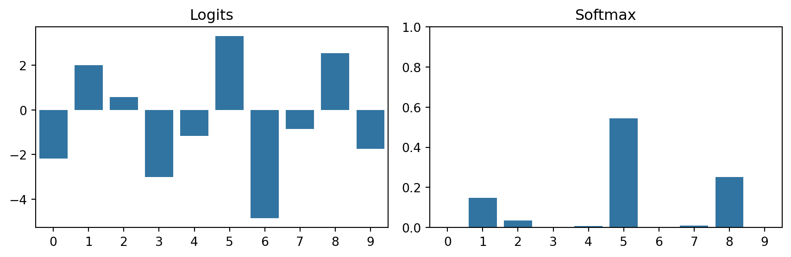
3 - Image Classification
TipLearning Objectives
- Define and recognize classification problems.
- Interpret logits, probabilities and the role of the softmax function.
- Explain cross-entropy and maximum likelihood on a high-level.
- Compare classic CNN architectures (AlexNet→VGG→ResNet→ConvNeXt).
- Apply transfer learning and explain when to freeze vs fine-tune layers.
TipTLDR Recap
Image Classification: Core Task
- Assign images to predefined classes (multi-class: ≥2 classes, binary: 2 classes, multi-label: multiple class sets)
- Use CNNs to learn hierarchical features automatically from raw pixels
- Output: class probabilities or labels
Softmax: Logits → Probabilities
\[P(Y = k \mid X = \mathbf{x}) = \frac{e^{z_k}}{\sum_{j=1}^K e^{z_j}}\]
- Logits \(\mathbf{z}\): Raw model outputs (unbounded)
- Softmax \(\sigma(\mathbf{z})\): Converts logits to valid probability distribution
- Properties: Always sums to 1, outputs in [0,1], differentiable
Cross-Entropy Loss = Negative Log-Likelihood
Maximum Likelihood approach:
\[L(\mathbf{X}, \mathbf{y}, \theta) = -\sum_{i=1}^N \sum_{j=1}^K y^{(i)}_j \log P(Y = j\mid X = \mathbf{x}^{(i)})\]
- Minimizing negative log-likelihood = maximizing likelihood of correct predictions
- Equivalent to cross-entropy between true distribution \(\mathbf{y}\) and predicted \(\hat{\mathbf{y}}\)
- Penalizes confident wrong predictions heavily
Key Insight: Softmax + Cross-Entropy arise naturally from probabilistic modeling (categorical distribution + maximum likelihood estimation)
Classic CNN Architectures Evolution
- AlexNet (2012): 5 conv + 3 FC layers, ReLU, dropout → ImageNet breakthrough
- VGG (2014): Deeper (16-19 layers), small 3×3 kernels, simple design → showed depth matters
- ResNet (2015): Residual connections (skip connections) → enabled 50-152 layers, solved vanishing gradients
- ConvNeXt (2022): Modern CNN with Transformer-era tricks → competes with Vision Transformers
Residual Connections: The Key Innovation
\[\mathbf{x}_{l+1} = \mathbf{x}_l + F(\mathbf{x}_l)\]
- Network learns residual \(F(\mathbf{x})\) instead of full transformation
- Enables training very deep networks (>100 layers)
- Smoother loss landscape → better optimization
- Default behavior: pass activations unchanged (identity mapping)
Transfer Learning: Standing on Giants’ Shoulders
- Pre-training: Train on large dataset (e.g., ImageNet: 1.2M images, 1000 classes)
- Transfer: Adapt to your specific task with much less data
- Strategies:
- Freeze early layers (extract features only) when data is very scarce
- Fine-tune all layers when you have moderate data
- Fine-tune only later layers as middle ground
Why Transfer Learning Works: - Early layers learn general features (edges, textures) - Later layers learn task-specific features - Pre-trained features transfer well across vision tasks
Architecture Selection Strategy
- ✅ Don’t be a hero: Use proven architectures first
- ✅ ResNet-50/101: Excellent baseline for most tasks
- ✅ EfficientNet: When model size/speed matters
- ✅ ConvNeXt: State-of-the-art CNN performance
Consider: - Accuracy requirements - Inference speed (FLOPs) - Model size (memory) - Available training data
Modern Components
- Normalization layers (BatchNorm, LayerNorm): Stabilize training, enable deeper networks
- Global Average Pooling: Replace large FC layers → fewer parameters
- SE Blocks: Learn channel-wise attention → better feature recalibration
- Depthwise Separable Convolutions: Reduce parameters while maintaining performance
Pre-processing Pipeline
- Resize/crop to fixed size (e.g., 224×224)
- Scale pixel values: [0, 255] → [0, 1]
- Normalize: Subtract mean, divide by std per channel
- Data augmentation (training): flips, crops, color jitter
Best Practices
- ✅ Start with pre-trained models (transfer learning)
- ✅ Use proven architectures (ResNet, ConvNeXt)
- ✅ Apply proper preprocessing (resize, normalize)
- ✅ Use cross-entropy loss for classification
- ✅ Monitor both training and validation metrics
- ✅ Consider calibration (temperature scaling, label smoothing)
Key Takeaway: Classification success comes from combining strong architectures (ResNets), probabilistic foundations (softmax + cross-entropy), transfer learning, and proper training practices.
1 Introduction
Image classification is a core task of computer vision. In image classification, an image is assigned to a predefined set of classes. There are different variants of image classification:
- in multi-class classification there are \(> 2\) classes
- in binary classification there are 2 classes
- in multi-label classification there are several sets of classes.
Figure 1 illustrates a multi-class classification task.
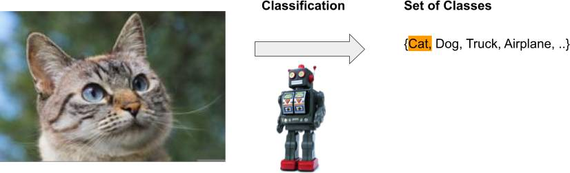
Figure 2 shows an example from the paper by Krizhevsky, Sutskever, and Hinton (2012), which achieved the best results in the 2012 ImageNet competition, demonstrating how well CNNs work. Note that each image had to be assigned to one of 1’000 classes.
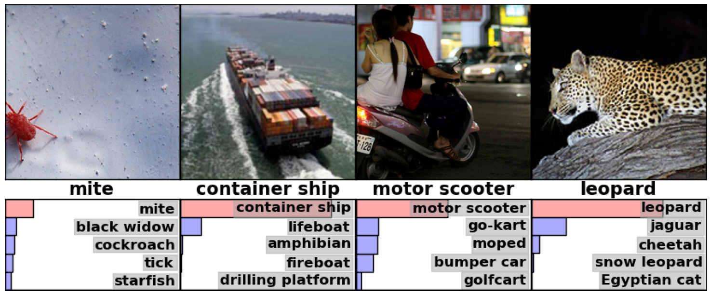
Figure 3 illustrates the challenge with images taken by camera traps, which need to be classified along animal species.
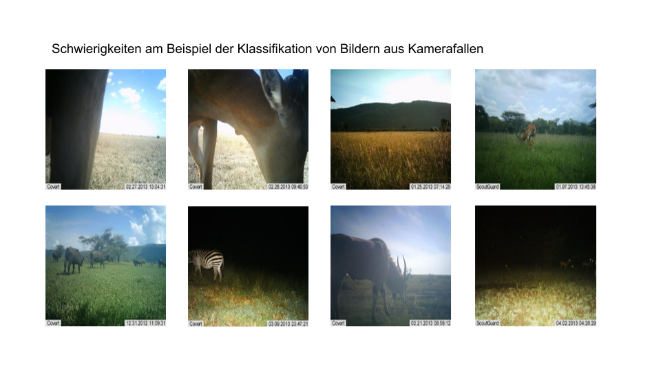
2 Parametric Approach
In a parametric approach, we seek a model of the following form:
\[ \hat{y}^{(i)} = f(\theta, \mathbf{x}^{(i)}) \]
We want to find model parameters \(\theta\) that output a score/prediction \(\hat{y}^{(i)}\) for any data points \(\mathbf{x}^{(i)}\) for each class \(k \in K\). We then want to assess how good this score is with the help of a loss function.
Note: The model parameters \(\theta\) are all the learnable parameters of a model, e.g. the filters of the convolutional layers.
2.1 Softmax Classifier
With a softmax classifier, we interpret model predictions/scores as probabilities of class memberships: \(P(Y=\mathbf{y}^{(i)}| X = \mathbf{x}^{(i)})\). We interpret the output of a model as the parameters of a Categorical Distribution over all possible classes.
To obtain a valid probability distribution, the untransformed outputs \(\mathbf{z}\), also called logits, of a model are transformed with the softmax function \(\sigma(\mathbf{z})\):
\[ P(Y = k| X = \mathbf{x}^{(i)}) = \sigma(\mathbf{z})_k = \frac{e^{z_k}}{\sum_i^K e^{z_i}} \]
Figure 4 shows an example of the effect of the softmax transformation.
Tip🎮 Interactive Exploration
Try different logit distributions and see how softmax transforms them into probabilities!
Key observations:
- Logits can be any real number (negative, zero, or positive)
- Probabilities always sum to exactly 1.0 (see green box)
- Entropy measures uncertainty: lower = more confident, higher = more uncertain
- Try “Uniform Logits” vs “Very Confident” to see the extremes!
3 Loss Function
Now we look at how to define the loss function \(L(\mathbf{X}, \mathbf{y}, \theta)\) for a multi-class classification problem.
Note
The loss function for a binary classification problem is identical. If we have a multi-label classification problem we have multiple outputs and thus multiple softmax functions. The principle is identical.
3.1 Likelihood
The likelihood of a data point \((\mathbf{x}^{(i)}, y^{(i)})\) is the probability of observing a data point, given a specific model:
\[ P(Y=y^{(i)}| X = \mathbf{x}^{(i)}) = f(\theta, \mathbf{x}^{(i)}) \]
This means we formulate a model with a probabilistic interpretation of predictions: \(f(\theta, \mathbf{x}^{(i)}): \mathbb{R}^{n} \mapsto [0, 1]\)
For a multi-class classification, the label vector is one-hot encoded \(\mathbf{y}^{(i)} \in \{0, 1\}^K\), where the true class is coded with 1 and the rest with 0. The likelihood of a data point is defined as:
\[ \prod_{j=1}^K P(Y = j| X = \mathbf{x}^{(i)})^{y^{(i)}_j} \]
Since only one entry in \(\mathbf{y}^{(i)}\) is 1, the likelihood is simply the prediction for the true class \(P(Y = y^{(i)}| X = \mathbf{x}^{(i)})\).
Note📝 Quiz: Cat vs Dog Likelihood
Scenario: Your CNN model classifies 5 images from our dataset. Let’s explore how different prediction confidences affect likelihood!
The Images:
True Labels: \(\mathbf{y} = [\text{Cat}, \text{Dog}, \text{Cat}, \text{Dog}, \text{Dog}]\) or \([0, 1, 0, 1, 1]\) in binary encoding.
Question 1: Model A predicts: \(P(\text{Cat}) = [0.9, 0.2, 0.8, 0.3, 0.1]\). What’s the likelihood?
Think first: For each image, what’s the probability of the correct class?
Click for result
import numpy as np
# True labels: [Cat=0, Dog=1, Cat=0, Dog=1, Dog=1]
y_true = np.array([0, 1, 0, 1, 1])
# Model A predictions: P(Cat) for each image
p_cat = np.array([0.9, 0.2, 0.8, 0.3, 0.1])
p_dog = 1 - p_cat # P(Dog) = 1 - P(Cat)
# Extract probability of correct class for each image
p_correct = np.where(y_true == 0, p_cat, p_dog)
print(f"P(correct class): {p_correct}")
# Likelihood = product of correct probabilities
likelihood = np.prod(p_correct)
print(f"Likelihood = {likelihood:.6f}")
# Individual contributions
for i, (true_label, prob) in enumerate(zip(y_true, p_correct)):
label_name = "Cat" if true_label == 0 else "Dog"
print(f"Image {i+1} ({label_name}): P = {prob:.1f}")P(correct class): [0.9 0.8 0.8 0.7 0.9]
Likelihood = 0.362880
Image 1 (Cat): P = 0.9
Image 2 (Dog): P = 0.8
Image 3 (Cat): P = 0.8
Image 4 (Dog): P = 0.7
Image 5 (Dog): P = 0.9Interpretation: Model A is confident about the first cat (0.9) and the last dog (0.9), but uncertain about the middle images.
Question 2: Model B predicts: \(P(\text{Cat}) = [0.8, 0.1, 0.9, 0.2, 0.1]\). Which model is better?
Hint: Compare the likelihoods. Higher likelihood = better model!
Click for result
# Model B predictions
p_cat_B = np.array([0.8, 0.1, 0.9, 0.2, 0.1])
p_dog_B = 1 - p_cat_B
# Extract probability of correct class
p_correct_B = np.where(y_true == 0, p_cat_B, p_dog_B)
print(f"Model B - P(correct class): {p_correct_B}")
likelihood_B = np.prod(p_correct_B)
print(f"Model B - Likelihood = {likelihood_B:.6f}")
print(f"\nComparison:")
print(f"Model A: {likelihood:.6f}")
print(f"Model B: {likelihood_B:.6f}")
print(f"Model {'B' if likelihood_B > likelihood else 'A'} is better!")Model B - P(correct class): [0.8 0.9 0.9 0.8 0.9]
Model B - Likelihood = 0.466560
Comparison:
Model A: 0.362880
Model B: 0.466560
Model B is better!Key Insight: Model B is more confident on the second cat (0.9 vs 0.8), leading to higher overall likelihood.
Question 3: What if we have a poorly calibrated model? Model C: \(P(\text{Cat}) = [0.6, 0.4, 0.6, 0.4, 0.4]\)
Consider: This model is not very confident about anything. How does this affect likelihood?
Click for result
# Model C: low confidence predictions
p_cat_C = np.array([0.6, 0.4, 0.6, 0.4, 0.4])
p_dog_C = 1 - p_cat_C
p_correct_C = np.where(y_true == 0, p_cat_C, p_dog_C)
print(f"Model C - P(correct class): {p_correct_C}")
likelihood_C = np.prod(p_correct_C)
print(f"Model C - Likelihood = {likelihood_C:.6f}")
print(f"\nAll Models Comparison:")
print(f"Model A (mixed confidence): {likelihood:.6f}")
print(f"Model B (high confidence): {likelihood_B:.6f}")
print(f"Model C (low confidence): {likelihood_C:.6f}")
# Log-likelihoods (what we actually optimize)
print(f"\nNegative Log-Likelihoods (Cross-Entropy Loss):")
print(f"Model A: {-np.log(likelihood):.3f}")
print(f"Model B: {-np.log(likelihood_B):.3f}")
print(f"Model C: {-np.log(likelihood_C):.3f}")
print(f"Lower is better for loss!")Model C - P(correct class): [0.6 0.6 0.6 0.6 0.6]
Model C - Likelihood = 0.077760
All Models Comparison:
Model A (mixed confidence): 0.362880
Model B (high confidence): 0.466560
Model C (low confidence): 0.077760
Negative Log-Likelihoods (Cross-Entropy Loss):
Model A: 1.014
Model B: 0.762
Model C: 2.554
Lower is better for loss!Critical Observation: - Confident correct predictions (Model B) → High likelihood → Low loss ✅ - Low confidence (Model C) → Low likelihood → High loss ❌ - This is why we train models to be confident when correct!
Question 4: What happens if we increase the dataset by ten fold? For example what happens with the likelihood of Model A if \(P(\text{Cat}) = [0.9, 0.2, 0.8, 0.3, 0.1]\) is repeated 10 times?
Click for result
# Repeat the dataset 10 times
p_cat_repeated = np.tile(p_cat, 10)
y_true_repeated = np.tile(y_true, 10)
p_dog_repeated = 1 - p_cat_repeated
p_correct_repeated = np.where(y_true_repeated == 0, p_cat_repeated, p_dog_repeated)
print(f"Dataset repeated 10x (50 samples total)")
print(f"P(correct class) for first 5: {p_correct_repeated[:5]}")
likelihood_10x = np.prod(p_correct_repeated)
print(f"\nLikelihood (10x dataset): {likelihood_10x:.2e}")
print(f"Original likelihood (1x): {likelihood:.6f}")
print(f"\nRatio: {likelihood_10x / likelihood:.2e}")
# The key insight: likelihood shrinks exponentially!
print(f"\nNumerical underflow risk!")
print(f"This is why we use LOG-likelihood instead:")
print(f"Log-likelihood (10x): {np.sum(np.log(p_correct_repeated)):.3f}")
print(f"Log-likelihood (1x): {np.sum(np.log(p_correct)):.3f}")
print(f"The log version just scales linearly (10x) without numerical issues!")
print(f"Lower is better for loss!")Dataset repeated 10x (50 samples total)
P(correct class) for first 5: [0.9 0.8 0.8 0.7 0.9]
Likelihood (10x dataset): 3.96e-05
Original likelihood (1x): 0.362880
Ratio: 1.09e-04
Numerical underflow risk!
This is why we use LOG-likelihood instead:
Log-likelihood (10x): -10.137
Log-likelihood (1x): -1.014
The log version just scales linearly (10x) without numerical issues!
Lower is better for loss!Critical Observation:
- With 10x data, likelihood becomes TINY (underflow risk)
- But log-likelihood scales linearly → numerically stable!
Bonus Question: What’s the perfect model’s likelihood?
Perfect Model Analysis
# Perfect model: 100% confident and always correct
p_cat_perfect = np.array([1.0, 0.0, 1.0, 0.0, 0.0]) # Certain about each class
p_dog_perfect = 1 - p_cat_perfect
p_correct_perfect = np.where(y_true == 0, p_cat_perfect, p_dog_perfect)
print(f"Perfect Model - P(correct class): {p_correct_perfect}")
likelihood_perfect = np.prod(p_correct_perfect)
print(f"Perfect Model - Likelihood = {likelihood_perfect}")
print(f"Perfect Model - Negative Log-Likelihood = {-np.log(likelihood_perfect)}")
print(f"\n🎯 Maximum possible likelihood = 1.0")
print(f"🎯 Minimum possible loss = 0.0")Perfect Model - P(correct class): [1. 1. 1. 1. 1.]
Perfect Model - Likelihood = 1.0
Perfect Model - Negative Log-Likelihood = -0.0
🎯 Maximum possible likelihood = 1.0
🎯 Minimum possible loss = 0.0The Goal: Train your CNN to approach this perfect confidence on the training set (while generalizing to new data)!
3.2 Maximum Likelihood
The likelihood \(P(\mathbf{y} | \theta, \mathbf{X})\) of observing our entire dataset \((\mathbf{X}, \mathbf{y})\), given the parameters \(\theta\) and assuming that the data points \((\mathbf{x}^{(i)}, y^{(i)})\) are independent and identically distributed, can be calculated as:
\[\begin{equation} \prod_{i=1}^N \prod_{j=1}^K P(Y = j| X = \mathbf{x}^{(i)})^{y^{(i)}_j} \end{equation}\]
Under the Maximum Likelihood approach, we seek the parameters \(\theta\) that maximize the likelihood of observing the dataset.
3.3 Negative Log-Likelihood
With Maximum Likelihood, we aim to choose the parameters \(\theta\) such that \(p(\mathbf{y} | \theta, \mathbf{X})\) is maximized. However, this function can be complex to handle, and we can use some mathematical tricks. We take the logarithm of the likelihood so that the product of probabilities becomes a sum. Since the logarithm is a monotonically increasing function, we can maximize its logarithm instead of the function \(p(\mathbf{y} | \theta, \mathbf{X})\). Finally, we take the negative of the function, allowing us to minimize it.
\[\begin{align} L(\mathbf{X}, \mathbf{y}, \theta) &= - \log \prod_{i=1}^N \prod_{j=1}^K P(Y = j| X = \mathbf{x}^{(i)})^{y^{(i)}_j} \\ &= -\sum_{i=1}^N \sum_{j=1}^K y^{(i)}_j \log P(Y = j| X = \mathbf{x}^{(i)}) \end{align}\]
Tip💡 Maximum Likelihood Intuition
Visualize the connection: Likelihood → Log-Likelihood → Cross-Entropy Loss:
Critical Insights:
- X-axis: Model calibration = probability assigned to the correct class (ranges from 0.5=random guessing to 0.98=well-calibrated)
- Top panel: Likelihood shrinks exponentially with dataset size → numerical underflow risk!
- Middle panel: Log-likelihood converts products to sums → numerically stable, same maximum
- Bottom panel: Negative log-likelihood (NLL) = Cross-Entropy Loss used in training
- Key Connection: max L(θ) ⟺ max log L(θ) ⟺ min -log L(θ) ⟺ min Cross-Entropy
The visualization shows: as model calibration improves (x increases), likelihood increases, log-likelihood increases, and loss (NLL) decreases.
3.4 Cross-Entropy
The loss function, derived with Maximum Likelihood, can also be viewed through the lens of cross-entropy between two discrete probability functions. Specifically, we can calculate and minimize the cross-entropy between the true distribution \(\mathbf{y}^{(i)}\) and the predicted \(\mathbf{\hat{y}}^{(i)}\). Cross-entropy comes from information theory and measures how many bits/nats on average are needed to describe an event of a probability distribution \(p(x)\) when using the approximation \(q(x)\).
\[\begin{equation} CE = - \sum_{x \in X} p(x) \log q(x) \\ CE = - \sum_{i=1}^N \sum_{j=1}^K y_j^{(i)} \log \hat{y}_j^{(i)} \end{equation}\]
It is evident that cross-entropy is identical to the negative log-likelihood.
Tip📊 Cross-Entropy Loss Landscape
Visualize how cross-entropy penalizes predictions:
Key Insights:
- Loss approaches ∞ when model is confidently wrong (p→0 for true class)
- Loss approaches 0 when model is confidently correct (p→1 for true class)
- Asymmetric penalty: Being wrong and confident is much worse than being uncertain
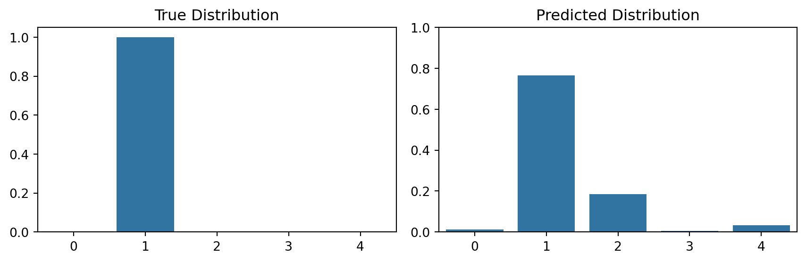
Figure 5 shows an example with a cross-entropy value of: 0.266.
Tip🎯 Interactive Multi-Class Cross-Entropy
See how different predictions map to loss values on the curve:
Key Takeaways:
- Green bar = True class; Red dot = Current position on loss curve
- Watch how the red dot moves along the curve as predictions change
- Perfect prediction (p=1.0) → Dot at left, Loss ≈ 0
- Confident wrong (p=0.05) → Dot at right, Loss ≈ 3.0
3.5 Try it out yourself!
TipTrain a CNN for image classification in your browser!
4 Architectures
Architecture refers to the complete definition of an untrained (deep-learning) model, i.e., the sequence and configuration of layers. The following are some important architectures that have been successfully used for image classification.
4.1 AlexNet
CNNs became extremely popular after winning the ImageNet Competition. Krizhevsky, Sutskever, and Hinton (2012) implemented a CNN with multiple layers, known as the AlexNet architecture, as shown in Figure 6. ImageNet is a large, hierarchical image dataset Deng et al. (2009), which enabled efficient training of CNNs for the first time.
AlexNet consists of 5 convolutional layers and 3 fully-connected layers. The last layer is a 1000-way softmax output to model the classes in ImageNet.
The model was trained with two GPUs (GTX 580) with 3GB memory each. Since 3GB was insufficient to train the model, the architecture was split across the GPUs. Some layers were split between the GPUs, allowing a larger network to be trained.
Figure 6 shows the detailed architecture, including kernel sizes, the number of filters per layer, activation map dimensions, and pooling layers. ReLU was used as the activation function. This representation is from the original paper and shows how the model was split across two GPUs.

Since the split across two GPUs is no longer necessary, the architecture is somewhat simplified. Modern implementations are shown in Figure 7.
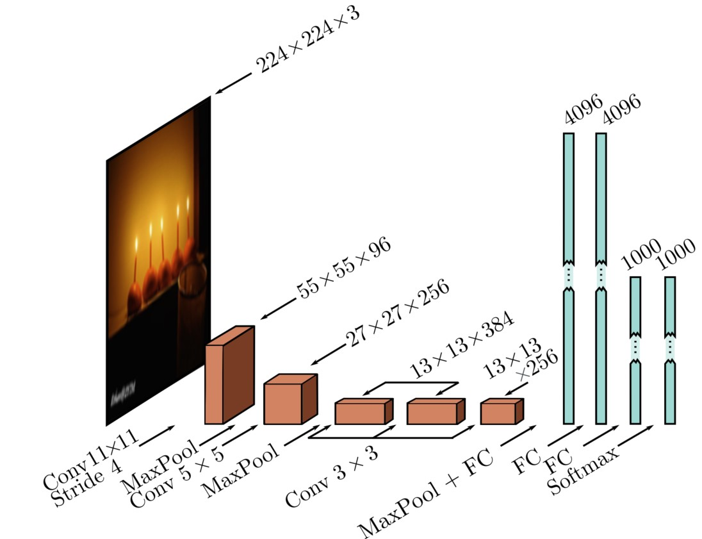
Figure 8 presents the operations in AlexNet in tabular form.
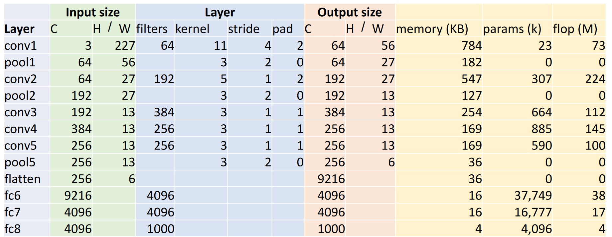
We can also easily load AlexNet via torchvision.
import torch
import torchvision.models as models
import torchinfo
alexnet = models.alexnet()
x = torch.zeros(1, 3, 224, 224, dtype=torch.float, requires_grad=False)
yhat = alexnet(x)
print(torchinfo.summary(alexnet, input_size=(1, 3, 224, 224)))==========================================================================================
Layer (type:depth-idx) Output Shape Param #
==========================================================================================
AlexNet [1, 1000] --
├─Sequential: 1-1 [1, 256, 6, 6] --
│ └─Conv2d: 2-1 [1, 64, 55, 55] 23,296
│ └─ReLU: 2-2 [1, 64, 55, 55] --
│ └─MaxPool2d: 2-3 [1, 64, 27, 27] --
│ └─Conv2d: 2-4 [1, 192, 27, 27] 307,392
│ └─ReLU: 2-5 [1, 192, 27, 27] --
│ └─MaxPool2d: 2-6 [1, 192, 13, 13] --
│ └─Conv2d: 2-7 [1, 384, 13, 13] 663,936
│ └─ReLU: 2-8 [1, 384, 13, 13] --
│ └─Conv2d: 2-9 [1, 256, 13, 13] 884,992
│ └─ReLU: 2-10 [1, 256, 13, 13] --
│ └─Conv2d: 2-11 [1, 256, 13, 13] 590,080
│ └─ReLU: 2-12 [1, 256, 13, 13] --
│ └─MaxPool2d: 2-13 [1, 256, 6, 6] --
├─AdaptiveAvgPool2d: 1-2 [1, 256, 6, 6] --
├─Sequential: 1-3 [1, 1000] --
│ └─Dropout: 2-14 [1, 9216] --
│ └─Linear: 2-15 [1, 4096] 37,752,832
│ └─ReLU: 2-16 [1, 4096] --
│ └─Dropout: 2-17 [1, 4096] --
│ └─Linear: 2-18 [1, 4096] 16,781,312
│ └─ReLU: 2-19 [1, 4096] --
│ └─Linear: 2-20 [1, 1000] 4,097,000
==========================================================================================
Total params: 61,100,840
Trainable params: 61,100,840
Non-trainable params: 0
Total mult-adds (Units.MEGABYTES): 714.68
==========================================================================================
Input size (MB): 0.60
Forward/backward pass size (MB): 3.95
Params size (MB): 244.40
Estimated Total Size (MB): 248.96
==========================================================================================4.2 VGG
Simonyan and Zisserman (2015) won the ImageNet Challenge in 2014 with their VGG architecture. They showed that smaller 3x3 kernels work significantly better and that deeper networks with 16-19 layers can be trained. Figure 9 shows the architecture as presented in the original paper. Figure 10 visualizes the architecture.
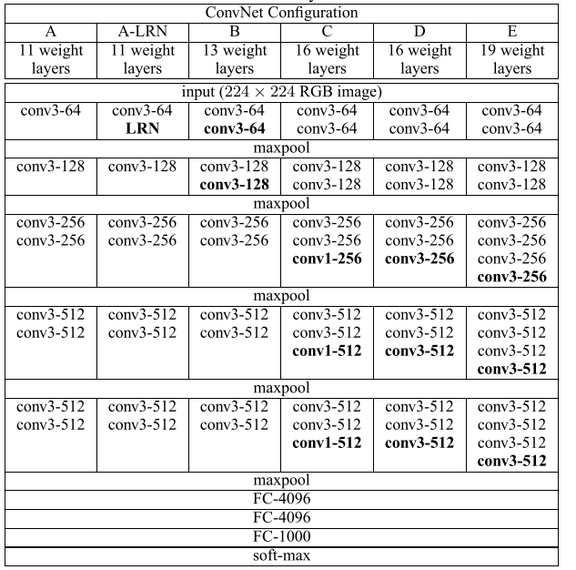
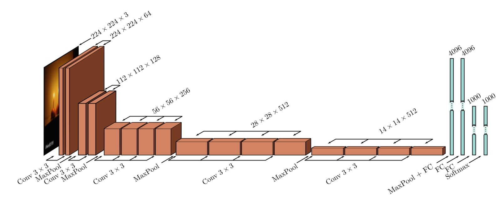
VGG introduced a popular design element: A layer has the same number of filters as the previous layer unless the activation map dimensions are halved, in which case the number of filters is doubled (see also Figure 10). This was done to maintain the time complexity of the layers. VGG does not use normalization layers.
Figure 11 compares VGG with AlexNet.
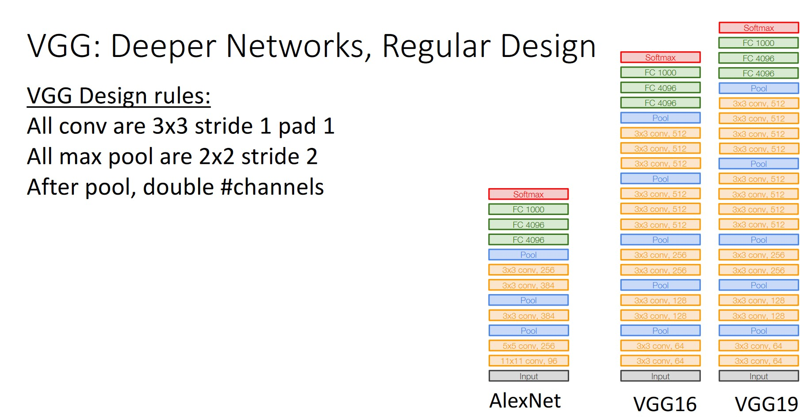
4.3 ResNet
He et al. (2016) wondered whether CNNs could be improved simply by making them deeper, i.e., adding more layers. Their experiments showed that adding layers eventually stops being beneficial, and performance saturates and then rapidly degrades (see Figure 12). They noticed that the performance did not degrade due to overfitting (see Figure 13, which shows that training error is also poor), but because back-propagation becomes less effective and the weights do not optimize well. He et al. (2016) hypothesized that deeper networks could not perform worse than shallower ones because the additional layers could simply pass on activations unchanged.
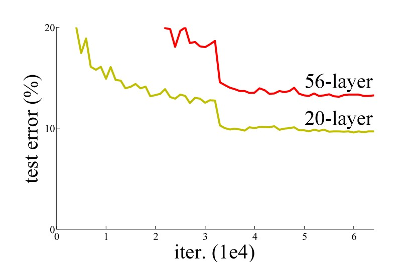
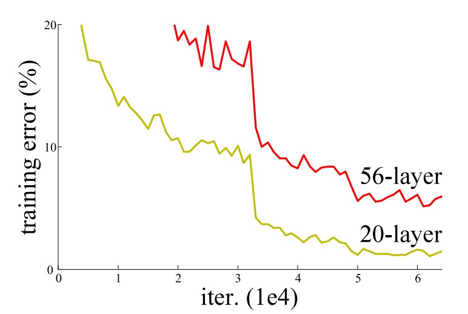
They then hypothesized that passing on activations unchanged as a default behavior could avoid this problem. They introduced identity mappings. Figure 14 shows such a connection. These connections are also called residual connections because the network only needs to learn the change in activations from layer \(i\) to layer \(i+1\), the residue.
ResNet was otherwise inspired by VGG16. The convolutional layers consist of 3x3 kernels (except the first one), and the number of filters is doubled when the activation map dimensions are halved. ResNet uses convolutions with stride 2 for down-sampling and no max pooling. At the end, ResNet uses a global average pooling layer followed by a fully-connected layer with the number of classes. Variants of ResNet have 18, 34, 50, and over 100 layers. ResNet also uses batch normalization. Figure 15 shows the architecture.
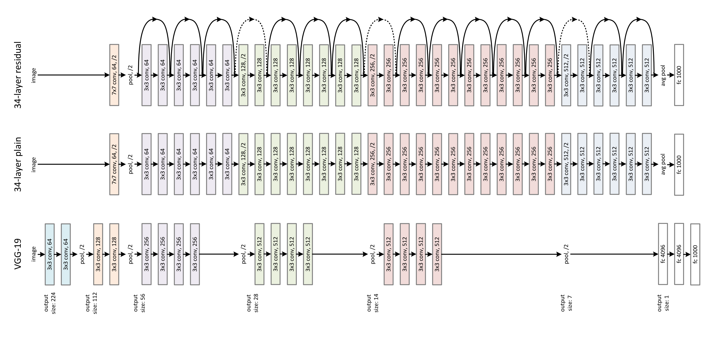
ResNet is very popular and is still widely used today (there are now more modern variants). Recent studies of identity mappings (or more generally skip connections) have shown that the gradient surface of the loss function becomes smoother, allowing the network to be optimized better. This is impressively illustrated in Figure 16.
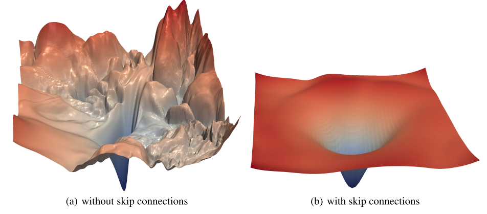
4.4 ConvNext
One of the most modern CNN architectures was described in Liu et al. (2022). This architecture uses tricks and implementation ideas accumulated over decades from various architectures. Figure 17 shows, starting from a modern version of ResNet, what has been adjusted to define this state-of-the-art architecture. Examples include: larger kernels, different activation functions, layer normalization instead of batch normalization, and depthwise separable convolutions.
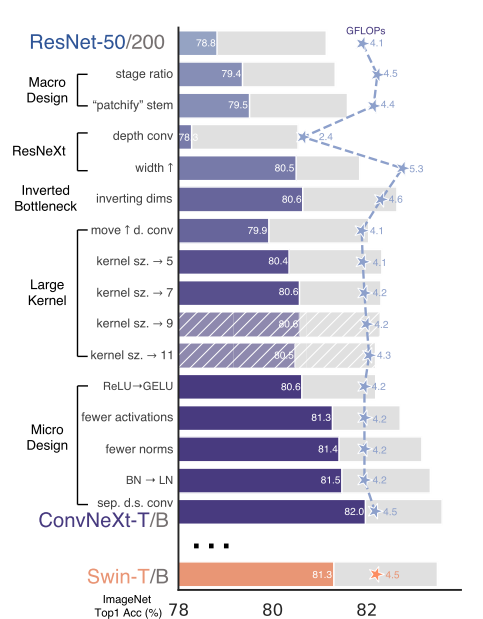
There is already a new version of this architecture Woo et al. (2023).
4.5 ImageNet Performance
Figure 18 shows the development of ImageNet performance. As of 2023, we are much closer to 100%, see Link.
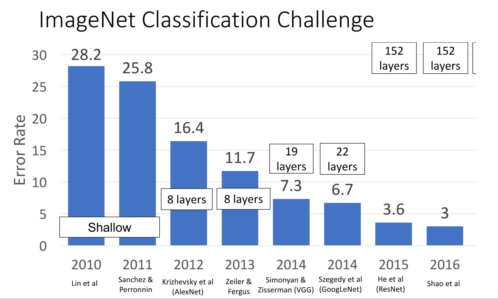
4.6 Which Architecture?
Which architecture should be chosen for a specific problem? A common tip is: Don’t be a hero.
One should rely on off-the-shelf architectures and not implement their own without a good reason.
Typically, ResNet-50 or ResNet-101 are good choices. However, there are also models that require significantly fewer parameters, such as Efficient Nets.
Important considerations are also the requirements regarding accuracy, performance (FLOPs), and model size (memory).
5 Further Variations
There are countless other architectures and especially specific layers or layer blocks that can be used in various architectures. The following are Squeeze/Excite Networks and the important class of normalization layers, which are often used and can significantly improve models or accelerate the optimization process.
5.1 Squeeze/Excite Networks
Squeeze-and-Excite Networks (SE-Networks) were introduced in 2019 Hu et al. (2019). These include so-called Squeeze and Excite blocks (SE blocks), which allow the scaling of activation maps of a layer. This scaling is learnable through a few additional parameters. In practice, significant performance gains have been observed. Figure 19 shows an illustration.
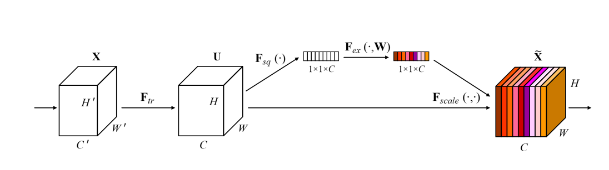
These SE blocks can be easily applied to arbitrary activation maps. Figure 19 shows an input feature map \(\mathbf{\mathsf{X}} \in \mathbb{R}^{H' \times W' \times C'}\) that is transformed with \(F_{tr}\) (e.g., with a convolutional layer). This results in the activation maps \(\mathbf{\mathsf{U}} \in \mathbb{R}^{H \times W \times C}\).
The transformation \(F_{sq}(\cdot)\) applies the squeeze operation, a global average pooling, to generate a description of each channel by aggregating spatial information of the activation map \(\mathbf{\mathsf{U}}\). This results in a vector \(z \in \mathbb{R}^{1 \times 1 \times C}\).
The excitation operation \(F_{ex}(\cdot, W)\) uses a gating mechanism with parameters \(W\), implemented with two fully-connected layers and activation functions. The result is \(s \in \mathbb{R}^{1 \times 1 \times C}\), the channel weights. It is called gating because the weights range from \([0, 1]\) and thus control how much information of a channel flows through (gatekeeping).
Finally, \(F_{scale}(\cdot)\) scales the activation maps \(\mathbf{\mathsf{U}}\) with the channel weights.
The operation can be described as follows:
\[\begin{align} U &= F_{tr}(X) \\ z &= F_{sq}(U) = \text{GlobalAvgPool}(U) \\ s &= F_{ex}(z, W) = \sigma(\mathbf{W}_2 g(\mathbf{W}_1 z)) \\ \hat{X} &= F_{scale}(U, s) = U \odot s \end{align}\]
where \(g()\) represents the ReLU function, and \(\sigma\) represents the sigmoid function.
5.2 Normalization Layers
Normalization layers normalize activation maps to improve parameter learning. There are many variations, as shown in Figure 20. In modern architectures, normalization layers are typically used. Popular is, for example, layer normalization (see Ba, Kiros, and Hinton (2016)). The general form of normalization is given in equation Equation 1. The parameters \(\gamma\) and \(\beta\) are learned, while the means \(E[x]\) and variances \(\sigma^2[x]\) are estimated from the activations. Why normalization layers work and which ones to prefer are still subjects of research and are often empirically tested in practice (considered as hyper-parameters). It is believed that the cost function becomes smoother overall, allowing the network to train faster and better Santurkar et al. (2019).
\[ y = \frac{x - E[x]}{\sqrt{\sigma^2[x] + \epsilon}} * \gamma + \beta \tag{1}\]
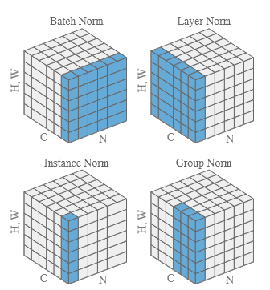
Note
Normalization layers are very common and used in almost any architecture. While batch normalization has traditionally been used in CNNs, newer models rely on layer normalization.
6 Pre-Processing
Typically, images are pre-processed before being processed by the CNN. This is done to make the optimization process converge faster. Common steps include:
- Resizing/cropping to a fixed size, e.g., 224x224x3. This is necessary for the images to be processed in a batch (they must have the same dimensions).
- Scaling: Images are scaled from the interval [0, 255] to the interval [0, 1].
- Normalization: Normalization is often done along the color channels so that the mean value of the pixel values is 0.
In torchvision, the following pre-processing steps are used: Link
7 Transfer Learning
Transfer Learning refers to the process of adapting a trained model for Task A to Task B. Adapting pre-trained models often leads to better results and also reduces the number of training iterations. Deep learning frameworks often provide easy access to such models (also known as Model Zoo). For example, from PyTorch: Link.
from torchvision.models import resnet50, ResNet50_Weights
resnet50(weights=ResNet50_Weights.IMAGENET1K_V2)8 PyTorch Example
8.1 Architecture
Example of a CNN architecture.
import torch
import torch.nn as nn
import torch.nn.functional as F
class Net(nn.Module):
def __init__(self):
super().__init__()
self.conv1 = nn.Conv2d(3, 6, 5)
self.pool = nn.MaxPool2d(2, 2)
self.conv2 = nn.Conv2d(6, 16, 5)
self.fc1 = nn.Linear(16 * 5 * 5, 120)
self.fc2 = nn.Linear(120, 84)
self.fc3 = nn.Linear(84, 10)
def forward(self, x):
x = self.pool(F.relu(self.conv1(x)))
x = self.pool(F.relu(self.conv2(x)))
x = torch.flatten(x, 1)
x = F.relu(self.fc1(x))
x = F.relu(self.fc2(x))
x = self.fc3(x)
return x
net = Net()8.2 Loss Function
import torch.optim as optim
criterion = nn.CrossEntropyLoss()
optimizer = optim.SGD(net.parameters(), lr=0.001, momentum=0.9)9 References
Ba, Jimmy Lei, Jamie Ryan Kiros, and Geoffrey E. Hinton. 2016. “Layer Normalization.” arXiv. http://arxiv.org/abs/1607.06450.
Deng, Jia, Wei Dong, Richard Socher, Li-Jia Li, Kai Li, and Li Fei-Fei. 2009. “ImageNet: A Large-Scale Hierarchical Image Database.” In 2009 IEEE Conference on Computer Vision and Pattern Recognition, 248–55. Miami, FL: IEEE. https://doi.org/10.1109/CVPR.2009.5206848.
He, Kaiming, Xiangyu Zhang, Shaoqing Ren, and Jian Sun. 2016. “Deep Residual Learning for Image Recognition.” In 2016 IEEE Conference on Computer Vision and Pattern Recognition (CVPR), 770–78. IEEE. https://doi.org/10.1109/CVPR.2016.90.
Hu, Jie, Li Shen, Samuel Albanie, Gang Sun, and Enhua Wu. 2019. “Squeeze-and-Excitation Networks.” arXiv. http://arxiv.org/abs/1709.01507.
Johnson, Justin. 2019. “EECS 498-007 / 598-005: Deep Learning for Computer Vision.” Lecture {Notes} / {Slides}. https://web.eecs.umich.edu/~justincj/teaching/eecs498/FA2019/.
Krizhevsky, Alex, Ilya Sutskever, and Geoffrey E Hinton. 2012. “ImageNet Classification with Deep Convolutional Neural Networks.” In Advances in Neural Information Processing Systems, edited by F. Pereira, C. J. Burges, L. Bottou, and K. Q. Weinberger. Vol. 25. Curran Associates, Inc. https://proceedings.neurips.cc/paper/2012/file/c399862d3b9d6b76c8436e924a68c45b-Paper.pdf.
Li, Hao, Zheng Xu, Gavin Taylor, Christoph Studer, and Tom Goldstein. 2018. “Visualizing the Loss Landscape of Neural Nets.” arXiv. http://arxiv.org/abs/1712.09913.
Liu, Zhuang, Hanzi Mao, Chao-Yuan Wu, Christoph Feichtenhofer, Trevor Darrell, and Saining Xie. 2022. “A ConvNet for the 2020s.” arXiv. http://arxiv.org/abs/2201.03545.
Prince, Simon J. D. 2023. Understanding Deep Learning. MIT Press. https://udlbook.github.io/udlbook/.
Qiao, Siyuan, Huiyu Wang, Chenxi Liu, Wei Shen, and Alan Yuille. 2020. “Micro-Batch Training with Batch-Channel Normalization and Weight Standardization.” arXiv. http://arxiv.org/abs/1903.10520.
Santurkar, Shibani, Dimitris Tsipras, Andrew Ilyas, and Aleksander Madry. 2019. “How Does Batch Normalization Help Optimization?” arXiv. http://arxiv.org/abs/1805.11604.
Simonyan, Karen, and Andrew Zisserman. 2015. “Very Deep Convolutional Networks for Large-Scale Image Recognition.” arXiv. http://arxiv.org/abs/1409.1556.
Woo, Sanghyun, Shoubhik Debnath, Ronghang Hu, Xinlei Chen, Zhuang Liu, In So Kweon, and Saining Xie. 2023. “ConvNeXt V2: Co-Designing and Scaling ConvNets with Masked Autoencoders.” arXiv. http://arxiv.org/abs/2301.00808.